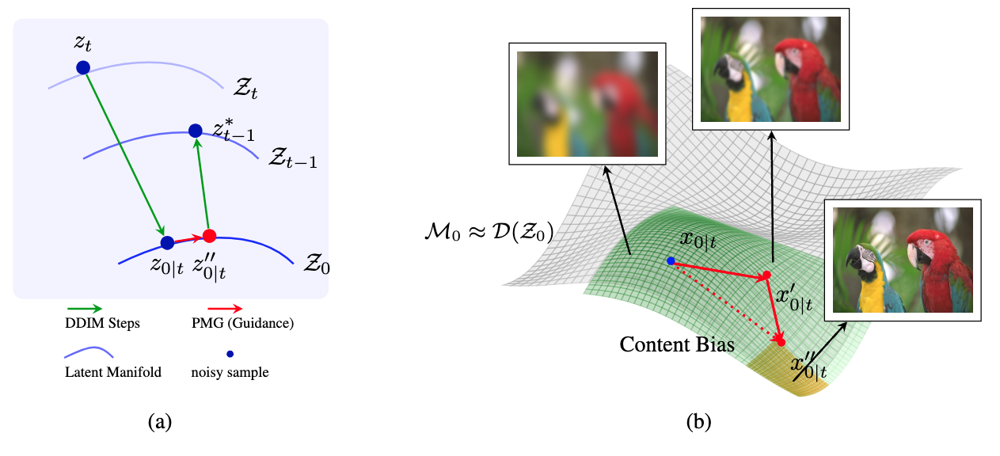
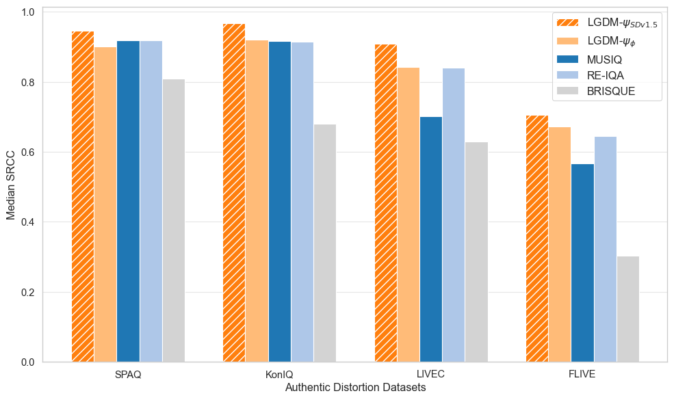
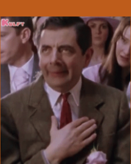

Perceptual Quality Assessment and Enhancement of Visual Media using Generative Priors.
SHRESHTH SAINI
PhD Student, The University of Texas at Austin
PhD Dissertation Defense
April 2026
Candidate & Committee Members
Shreshth Saini
Candidate
UT-Austin
Prof. Alan C. Bovik (Advisor)
Chair/Member
UT-Austin
Prof. Joydeep Ghosh
Member — UT-Austin
Prof. Diana Marculescu
Member — UT-Austin
Dr. Yan Ye
Member — Alibaba Group US
Dr. Balu Adsumilli
Member — Google Inc.
Dissertation Roadmap
Part I: Perceptual Quality Assessment
Beyond8Bits & BrightRate Review
HDR-UGC datasets & quality models (WACV '24, '26 + ICIP '24)
LGDM: Latent Guidance in Diffusion Models Review
Zero-shot IQA via generative priors (ICML '25)
HDR-Q: MLLM for HDR VQA CVPR '26
First multimodal LLM for HDR quality — HAPO framework
Part II: Generative Enhancement
Rectified-CFG++ NeurIPS '25
On-manifold guidance for rectified flow models
LumaFlux: Inverse Tone Mapping
Physically & perceptually guided SDR→HDR via DiT
Future Directions
Unified perception-generation framework
Unifying theme: Generative models as both evaluators and enhancers of visual quality
Progress Review Recap
Beyond8Bits & LGDM
Establishing HDR-UGC benchmarks and leveraging generative priors for perceptual quality
Review Beyond8Bits & BrightRate
The largest HDR-UGC video quality dataset & first HDR-aware blind VQA model
BrightRate: Multi-Stream VQA
- HDR features via expansive non-linearity on extreme luminance
- UGC features (CONTRIQUE) + CLIP semantic features
- Temporal difference module for flicker/quality fluctuations
- SROCC 0.889 vs. prior SOTA 0.853
4-Stage Pipeline
Video Sourcing (Vimeo+Users) → Bitrate Ladder Encoding → AMT Study (35 ratings/video) → SUREAL MOS Aggregation

HDR vs SDR gap, Beyond8Bits diversity, and HDR-Q improvements over baselines
Review LGDM: Latent Guidance for Quality Assessment
Zero-shot NR-IQA by exploiting generative priors — no task-specific training
Core Insight
Pretrained diffusion models encode a perceptual manifold. PMG steers sampling toward perceptually consistent regions — quality assessment without IQA labels.
Key Innovation: Diffusion Hyperfeatures
- Multi-timestep, multi-layer features from U-Net
- Theoretically grounded guidance on tangent spaces
- Works with off-the-shelf SD v1.5 — no fine-tuning
PMG: guide denoising toward perceptually consistent manifold regions

Perceptual Manifold Guidance — on-manifold quality-aware sampling

LGDM achieves SOTA median SRCC across authentic distortion benchmarks
Dissertation: Five Novel Contributions
Each project introduces new methods, datasets, or frameworks — together they form a complete pipeline from perception to generation for HDR visual media.
HDR Data
Gen. Priors
MLLM + RL
SDR→HDR
Flow Guidance
Unifying theme: Generative models as both evaluators and enhancers of visual quality
Part I: Perceptual Quality Assessment
HDR-Q: MLLM for HDR VQA
First multimodal LLM for HDR video quality assessment with HDR-Aware Policy Optimization
CVPR 2026
Can AI see and reason about
HDR video quality?
Today's answer: No. Every existing model was built for the 8-bit SDR world.
HDR Is Not "Better SDR" — It's a Different Signal Space
Every modern phone captures 10-bit HDR by default.
YouTube, Instagram, TikTok — billions of daily HDR uploads. HDR10 supports 10-bit depth, BT.2020 wide color gamut, PQ perceptual quantizer. Peak luminance ≥1000 nits vs SDR ~100 nits.
New perceptual phenomena SDR models cannot see:
Highlight clipping · Near-black banding · Color blooming · PQ quantization artifacts · Exposure flicker · Wide-gamut chroma shifts
Core argument:
Standard vision encoders (SigLIP, CLIP) process images in 8-bit sRGB. They are structurally blind to HDR-specific distortions. Not a training gap — a representation gap.

HDR preserves luminance and color detail that SDR collapses
Where Current Methods Break
No existing method combines HDR-aware perception with quality reasoning
| Method Family | HDR Input | Percept. Ground. | Reasoning | Cont. MOS | Interp. | SROCC |
|---|---|---|---|---|---|---|
| Classical (BRISQUE, VMAF) | ✗ | ✗ | ✗ | ✓ | ✗ | 0.41 |
| Deep VQA (FastVQA, DOVER) | ✗ | ~ | ✗ | ✓ | ✗ | 0.51 |
| HDR-Specific (HIDRO-VQA) | ✓ | ✓ | ✗ | ✓ | ✗ | 0.85 |
| MLLM-VQA (Q-Insight, DeQA) | ✗ | ✗ | ✓ | ~ | ✓ | 0.52 |
| HDR-Q (Ours) | ✓ | ✓ | ✓ | ✓ | ✓ | 0.92 |
The gap HDR-Q fills:
HDR-aware visual perception + continuous quality prediction + interpretable chain-of-thought reasoning. No prior method has all three.
Three Fundamental Obstacles
Each requires a dedicated solution — together they define the HDR-Q architecture
O1
SDR-pretrained
vision encoders
Blind to 10-bit PQ
O2
Continuous MOS
from token space
Bridging autoregressive & regression
O3
Modality
neglect
GRPO ignores HDR tokens
Evidence: GRPO with HDR input → 0.875 SROCC. SDR-only → 0.891. Adding HDR made it worse.
Beyond8Bits: The Foundation
First large-scale HDR-UGC quality dataset — the training ground for HDR-Q
Format: 10-bit HEVC, PQ transfer, BT.2020 · 360p–1080p · 0.2–5 Mbps bitrate ladder
Sources: 2,253 crowdsourced (diverse UGC) + 4,608 Vimeo CC (nature, outdoor, low-light)
Quality control: HDR10 display verification · Qualification quiz · Golden set (SROCC 0.85) · SUREAL MOS aggregation · Inter-subject SROCC 0.90
Dataset diversity, HDR vs SDR characteristics, and HDR-Q performance gains
HDR-Q: Architecture Overview

Solves O1: HDR-Aware Encoder
SigLIP-2 + dual-domain contrastive learning. Native 10-bit PQ. Dual HDR + SDR pathways.
Solves O3: HAPO Training
Contrastive KL + dual entropy + entropy-weighted advantage. Forces HDR modality attention.
Solves O2: Structured Output
Ovis2.5 (9B) + Rank-4 LoRA. <think> reasoning + <answer> MOS score. Gaussian reward σ=3.
HDR-Aware Vision Encoder
Contrastive HDR/SDR discrimination
Pull HDR close to caption, push SDR away
Full encoder loss
Semantic alignment + HDR discrimination
Design justifications
Why SigLIP-2? Strong semantic priors, multimodal-compatible.
Why contrastive? HDR info = what's in HDR but absent in SDR.
Why 10-bit PQ input? Tone-mapping destroys the signal we need.
Captions by Qwen2.5-VL-72B for quality-aware descriptions.

SigLIP-2 contrastive finetuning with matched HDR-SDR pairs and quality-aware captions
The Modality Neglect Problem
The most surprising finding — and the core motivation for HAPO
HDR-Q (SDR input only)
0.8914
Standard GRPO (HDR+SDR input)
0.8753
Adding HDR made it worse.
Why this happens:
- GRPO treats all tokens equally — no modality importance signal
- Autoregressive generation enables text-context shortcuts
- SDR features are familiar; HDR features are foreign → model ignores the foreign
- Result: higher input dimensionality, lower information utilization
HAPO fixes this: 0.9206 SROCC
By explicitly rewarding different outputs for HDR vs SDR inputs.
HAPO — Core Mechanism: HDR-SDR Contrastive KL
If the model ignores HDR → identical outputs for HDR & SDR → DKL ≈ 0. We maximize this divergence.
Maximized with coefficient γ = 0.5 in the HAPO objective
Mutual information between output and HDR content is lower-bounded. The policy is mathematically guaranteed to use HDR information.
The HAPO Objective
Entropy-weighted
advantage (HEW)
λHEW=0.3
Reference KL
stability
β=0.02
Contrastive KL
HDR grounding
γ=0.5
Dual entropy
anti-collapse
η₁=0.01, η₂=0.05
Training Pipeline & Reward Design
Stage 1: Modality Alignment
Full HAPO with γ=0.5. Curated Beyond8Bits subset with matched HDR-SDR pairs. Goal: teach model to attend to HDR-specific information. Both stages use RL — no SFT stage.
Stage 2: Quality Calibration
Full Beyond8Bits corpus. Score reward as primary signal, reduced γ. Goal: prediction accuracy while preserving HDR grounding from Stage 1.
Why two stages?
Modality alignment and quality calibration are competing objectives. Aggressive contrastive training degrades absolute accuracy; pure quality training enables modality neglect. Sequential prioritization resolves the tension.
Composite Reward
Rfmt: Binary — valid <think>/<answer> tags = 1
Rscore: Gaussian — exp(−(ŝ−s*)²/2σ²), σ=3. Smooth, differentiable.
Rself: Majority-vote consistency across K=8 completions.
Main Results: Beyond8Bits Benchmark
| Method | SROCC↑ | PLCC↑ | RMSE↓ |
|---|---|---|---|
| BRISQUE | 0.410 | 0.469 | 11.70 |
| CONTRIQUE | 0.625 | 0.605 | 15.02 |
| CONVIQT | 0.799 | 0.810 | 8.48 |
| HIDRO-VQA | 0.851 | 0.878 | 6.09 |
| Q-Insight (best MLLM) | 0.517 | 0.562 | 20.78 |
| HDR-Q (SDR only) | 0.891 | 0.890 | 7.42 |
| HDR-Q (Full) | 0.921 | 0.912 | 5.16 |
(zero-shot)
(zero-shot)

Zero-shot generalization without fine-tuning on target datasets
Qualitative: HDR-Q vs Baseline Reasoning

HDR-Q identifies true HDR artifacts (highlight preservation, banding, color fidelity). Ovis2.5 baseline hallucinates non-existent issues.
Ablation: Every Component Is Justified
| Variant | SROCC | RMSE | Tok. H |
|---|---|---|---|
| GRPO baseline | 0.81 | 10.73 | 0.20 |
| + HDR Encoder | 0.83 | 8.96 | 0.24 |
| HAPO w/o Contrastive KL | 0.86 | 7.10 | 0.29 |
| HAPO w/o HEW | 0.88 | 6.11 | 0.27 |
| HAPO w/o Dual Ent. | 0.91 | 5.82 | 0.26 |
| HDR-Q (Full) | 0.92 | 5.15 | 0.33 |
1. Contrastive KL — CRITICAL
0.92 → 0.86 without. Largest single drop. Prevents modality neglect.
2. HEW — Token-level credit assignment
0.92 → 0.88. Directs gradient to quality-relevant tokens.
3. HDR Encoder — Foundation
0.83 → 0.81. Essential for 10-bit PQ representation.
4. Dual Entropy — Stability
0.92 → 0.91. Prevents collapse, maintains exploration.
Token entropy: 0.20 → 0.33. Model becomes more uncertain at quality-critical decisions, not less. This is healthy.
Training Dynamics: HAPO vs GRPO

Token entropy during training — GRPO collapses, HAPO maintains healthy exploration
GRPO failure mode
Entropy drops → deterministic → ignores visual modality → text-context shortcuts
HAPO stabilization
Dual entropy maintains H ≈ 0.33 at quality-critical positions. Healthy exploration preserved.
Reasoning efficiency
CoT: 168 → 137 tokens (−18%). More concise, more focused. Boilerplate removed, quality observations retained.
What We Learn & Remaining Challenges
Key insights
- Modality neglect is the bottleneck, not encoder capacity. The contrastive KL mechanism is necessary and sufficient for HDR grounding.
- Token-level entropy is a diagnostic signal. Increasing entropy at decision points = better visual grounding. Collapsing entropy = text shortcuts.
- Two-stage RL outperforms SFT→RL. Both stages use RL, ensuring HDR grounding from initialization.
Remaining challenges
- Temporal reasoning is limited to T=8 frame sampling. Long-range temporal quality patterns may be missed.
- Extreme out-of-distribution content (e.g., synthetic HDR, gaming HDR) not well represented in training.
- Inference cost — MLLM inference is slower than lightweight VQA models. Not yet real-time.
Key Takeaways
First MLLM for HDR video quality. Prior MLLMs: 0.52 SROCC. HDR-Q: 0.92.
HAPO: principled solution to modality neglect. Three mechanisms, formal MI guarantee, all ablated.
Strong zero-shot generalization. 0.908 LIVE-HDR, 0.725 SFV+HDR — no fine-tuning.
Perception-grounded reasoning. CoT references HDR-specific phenomena baseline models cannot articulate.
Next: HDR-Q as reward model for HDR generation & restoration → closing the perception-generation loop.
Part II: Generative Enhancement
LumaFlux: Inverse Tone Mapping
Physically & Perceptually Guided Diffusion Transformers for SDR→HDR
arXiv preprint
Can we teach a generative model
the physics of light?
SDR→HDR reconstruction is ill-posed. We use physical priors and perceptual guidance to recover display-referred HDR.
What Happens When HDR Becomes SDR
The task lifts display-referred SDR into a wider HDR signal space


Luminance Compression
PQ: 0 to 10,000 cd/m². Gamma: 100 cd/m². SDR clips most of the luminance range.

Color Gamut Compression
The target uses BT.2020, while the SDR input uses BT.709.
What Gets Lost: 10-bit HDR vs 8-bit SDR
Illustrative split views show why clipped SDR cannot uniquely determine the original HDR signal
Shadow regions: SDR can remove detail that an inverse method cannot recover exactly.
Color regions: BT.709 input must be mapped into the wider BT.2020 target space.
Highlight regions: Heavily clipped SDR may not contain the detail needed for faithful reconstruction.
From SDR Input Space to HDR Output Space
LumaFlux maps BT.709 SDR inputs to display-referred PQ BT.2020 HDR outputs.

SDR input: an 8-bit BT.709 signal may contain clipped highlights and compressed color.

HDR target: a 10-bit PQ BT.2020 signal represents the display-referred output.
Key limitation: the tone head calibrates the frozen VAE decode, but it cannot restore detail that is absent from heavily clipped SDR.
Why ITM Is Fundamentally Ill-Posed
Clipping and gamut compression make exact inversion impossible when source detail is absent
1. Many-to-One Mapping
Distinct HDR luminance values can map to the same clipped SDR code value. The original detail is then not uniquely recoverable.
2. Color Gamut Loss
BT.2020 content compressed into BT.709 can lose chroma information that is not uniquely recoverable from the SDR representation.
3. Quantization Loss
Converting 10-bit PQ HDR to 8-bit SDR can remove fine gradations and compress highlights into fewer available code values.
LumaFlux reconstructs plausible HDR, but cannot recover detail absent from the SDR input.
Its frozen generative backbone is adapted with physical and perceptual guidance.
LumaFlux in the ITM Landscape
The release evaluates analytical, CNN, LUT, and diffusion alternatives under explicit protocols
Analytical Baselines
BT.2446c inverse and Reinhard inverse are evaluated on the synthetic Luma-Eval track under the same inputs, encoding, and metrics.
CNN Baselines
HDRTVNet++, FMNet, and KUNet are included in Luma-Eval. Published HDRTV1K baseline numbers retain their authors' protocols and are not directly rankable against LumaFlux.
Generative Baselines
LEDiff and X2HDR form the like-for-like generative comparison. LumaFlux uses fewer steps and fewer trainable parameters than both.
LumaFlux (Ours)
Frozen FLUX.1-dev MM-DiT with PGA, PCM, an HDR Residual Coupler, and an RQS tone-field decoder. 71.3M trainable parameters, 0.57% of the backbone.

CNN comparison on the Luma-Eval protocol

Generative comparison on the native track
Like-for-Like Generative Comparison
Native track
All three generative methods are evaluated on the same 117 pairs.
Quality
LumaFlux reaches 23.56 PU21-PSNR and 47.59 ΔEITP.
Efficiency
LumaFlux uses 8 steps and 71M trainable parameters on this comparison.
Verified margin
+4.9 dB over the closest diffusion competitor, about 6x cheaper per output pixel, with 2x fewer trainable parameters.
| Method | Steps | PU21-PSNR | ΔEITP |
|---|---|---|---|
| LEDiff | 50 | 10.99 | 198.58 |
| X2HDR | 30 | 18.65 | 92.20 |
| LumaFlux | 8 | 23.56 | 47.59 |
Luma-Eval: Controlled Comparison Protocol
Every method receives identical inputs, output encoding, and metric implementations
Synthetic track
Tone-mapping and codec degradations.
Expert-graded track
Expert-graded SDR from LIVE-TMHDR.
Native paired track
Paired SDR and HDR content.
A shared protocol makes the Luma-Eval comparison directly interpretable.
Signal fidelity
PU21-PSNR, PU21-PSNR-Y, PU21-SSIM, and ΔEITP.
Perceptual fidelity
HDR-LPIPS, HDR-VDP-3, and FR-HIDROVQA.
Headline result
LumaFlux is best in every reported Luma-Eval column.
Background Flow Matching in 4 Equations
The generation framework behind Flux and LumaFlux
1. Interpolation Path
data → noise, straight line
2. Target Velocity
Constant target velocity predicted by the network
3. Training Loss
Simple MSE: predicted vs true velocity
4. Inference: Solve ODE
t=1→0 via Euler. Deterministic, no noise.
Color: data x₀ · noise x₁ · interpolant xₜ · time t · network vθ
Background Rectified Flow: Straight Paths vs. Noisy Diffusion
LumaFlux uses a short rectified-flow bridge from encoded SDR to HDR

From Liu et al. (ICLR '23): (a) Linear interpolation has crossing paths. (b) Rectified flow straightens them via reflow. (c-d) After rectification, paths are straight ≈ optimal transport. Figure from official Rectified Flow repo.
Generative competitors
LEDiff uses 50 steps; X2HDR uses 30 steps on the native generative track.
LumaFlux operating point
A rectified-flow bridge is integrated from t=1 to t=0 in 8 steps, with no text prompt or sampling-strength control.
Measured efficiency: 5.28 s per 1080p frame and 27.06 GB peak memory on a single GH200. A 40-step run costs 4.7x more with no quality gain.
Background Flux MM-DiT & Why Standard LoRA Isn't Enough
Flux Architecture
FLUX.1-dev MM-DiT and its VAE remain frozen. LumaFlux runs prompt-free in 8 solver steps.
Standard LoRA
A lightweight low-rank adaptation without the learned HDR output mapping.
Why vanilla LoRA fails for ITM
The released ablation isolates this contrast.
LoRA-only and no-RQS configurations both collapse.
Result: about 19 dB on the ablation protocol.
LumaFlux: From LoRA to Luma-MMDiT
The full design combines physical cues, perceptual conditioning, residual fusion, and a learned output mapping:
PGA: Physical gating on attention residuals
PCM: Perceptual FiLM conditioning
RQS: Monotone spline tone-field decoder
HDR Residual Coupler: Fuses physical and perceptual paths
About 19 → 29.19 dB on the ablation protocol
Architecture Evolution: CNN → MMDiT → Luma-MMDiT

Left: CNN stack (local receptive field). Center: Standard Flux MMDiT (global attention but no physical priors). Right: LumaFlux (PGA + PCM + Coupler + RQS).
CNN: Local, no physical priors, no global context
MMDiT: Frozen FLUX.1-dev backbone and VAE
Luma-MMDiT: + SigLIP + Physical features + spectral gating + RQS
LumaFlux: Full Pipeline

PGA
Luminance + gradient + saturation + FFT → gated LoRA on WV
PCM
Frozen SigLIP → cross-attn → FiLM: γ⊙LN(h)+ζ
HDR Residual Coupler
Fuses physical and perceptual paths under timestep-and-layer modulation
RQS
Monotone tone-field decoder calibrating the frozen VAE output
Standard DiT Block → Luma-MMDiT Block
Targeted adaptation with 71.3M trainable parameters, 0.57% of the frozen backbone

Left: Standard MMDiT. Right: Luma-MMDiT with PGA on value projection, PCM after norm, Coupler at output.
// Standard MMDiT block
z → LN(z)
Q = zWQ, K = zWK
V = zWV
h = Attn(Q,K,V)
z = z + h + MLP(LN(z))
// + Luma-MMDiT:
V = z(WV0 + Rvt,ℓ) ← PGA
h = γt,ℓ⊙LN(h) + ζt,ℓ ← PCM
z += λ(WpTphys + WcC(Tperc)) ← Coupler
HDR Residual Coupler
Fuses physical and perceptual paths under timestep-and-layer modulation.
PGA: Physically-Guided Adaptation, Step by Step
Step 1: Extract physical features
Step 2: Physical & spectral gating
Step 3: Modulated LoRA
Verified PGA conditioning:
Timestep and layer conditioning changes how the residual is applied.
Physical cues include luminance, gradients, and saturation.
Spectral-band cues complement the spatial physical features.
Key property: PGA feeds physical and spectral cues into gated low-rank attention residuals while the backbone stays frozen.
PCM (Perceptual) & RQS (Decoder)
Perceptual Cross-Modulation
FiLM: scale and shift conditioning from the frozen SigLIP encoder.
RQS Tone-Field Decoder
Per-pixel learned monotone tone fields.
Monotonic, preserving luminance ordering.
Differentiable & invertible.
Calibrates the frozen VAE decode into display-referred HDR luminance.
Frozen Components
FLUX.1-dev + VAE + SigLIPOutput Contract
Display-referred PQ BT.2020 HDRPCM supplies frozen semantic conditioning + RQS calibrates the VAE decode into HDR luminance.
Training: Data & Configuration
314,396 paired SDR-HDR images from 2,092 source videos
| Source | Clips | Type |
|---|---|---|
| CHUG | 856 refs | User-generated HDR |
| LIVE-TMHDR | 40 + 120 | References + expert SDR |
| HDRTV1K | 1,235 | Native training pairs |
| Sol Levante | CC BY | HDR10 master |
8 TMOs × 3 CRF levels
Frozen degradation chain: tone mapping, BT.2020-to-BT.709 gamut conversion, and codec variation. Genuine expert grades are retained where available.
Training Configuration
Backbone: Frozen FLUX.1-dev + VAE · Trainable: 71.3M params (0.57%)
Main training: 100K optimizer steps · batch 16 · lr=2e-4 · bf16
Compute: four GH200 GPUs · about 36 hours (~144 GPU-hours)
Inference: 8 steps · prompt-free · 5.28 s per 1080p frame
Evaluation Benchmarks
HDRTV1K
117 published test pairs
Native track
117 generative pairs
Luma-Eval
100 held-out frames
Shared protocol
Luma-Eval reports seven metrics, including PU21-PSNR, ΔEITP, HDR-LPIPS, HDR-VDP-3, and FR-HIDROVQA.
Results: Best on Every Luma-Eval Metric
| Method | PU21-PSNR↑ | PU21-SSIM↑ | ΔEITP↓ | HDR-VDP-3↑ | FR-HIDRO↓ |
|---|---|---|---|---|---|
| BT.2446c inverse | 23.74 | 0.8291 | 61.60 | 5.611 | 0.753 |
| Reinhard inverse | 23.62 | 0.8286 | 61.76 | 5.726 | 0.753 |
| HDRTVNet++ | 23.03 | 0.8192 | 66.67 | 5.417 | 0.703 |
| FMNet | 22.86 | 0.8176 | 67.92 | 5.412 | 0.724 |
| KUNet | 22.27 | 0.8111 | 70.40 | 5.445 | 0.693 |
| LumaFlux | 24.23 | 0.8294 | 56.54 | 5.812 | 0.631 |
Luma-Eval
Luma-Eval
strongest baseline
strongest baseline
Best in every reported Luma-Eval column. HDRTV1K context: 33.34 dB for the explicitly in-domain checkpoint; 27.52 dB zero-shot for the mixed-corpus model.
Visual Result 1: Church Interior SDR/HDR Split View

SDR Input (left half)
The model receives an 8-bit BT.709 SDR frame.
LumaFlux HDR Output (right half)
The model produces display-referred PQ BT.2020 HDR from the SDR input without a text prompt.
Why this matters
The frozen VAE is not an HDR codec. The tone head cannot invent detail absent from heavily clipped SDR.
Visual Result 2: Shanghai Cityscape SDR/HDR Split View
SDR input (left) vs LumaFlux HDR output (right), with zoomed crop below

SDR input (left half)
The model receives an 8-bit BT.709 SDR frame.
LumaFlux output (right half)
The output is a display-referred PQ BT.2020 reconstruction from the 8-bit BT.709 input.
How LumaFlux handles this
PGA supplies physical and spectral cues. PCM supplies frozen SigLIP conditioning. RQS calibrates the output into HDR luminance.
Ablation: The Learned Output Mapping Matters
Separate ablation protocol; these values are not the headline Luma-Eval scores
| Configuration | PSNR↑ | Interpretation |
|---|---|---|
| LoRA-only | about 19 | Collapses |
| No RQS | about 19 | Collapses |
| Full design | 29.19 | Learned output mapping retained |
The full design avoids the collapse seen without the learned output mapping.
Ablation protocol PSNR
Key findings
LoRA alone is not enough. Removing RQS produces the same collapse. The full design reaches 29.19 dB, showing that the learned output mapping is essential.
Video: Training-Free Temporal Stabilization
The same image model is applied to video with shared bridge noise and an EMA on RQS parameters
Shared bridge noise
The same bridge-noise realization is reused across frames.
RQS parameter EMA
An exponential moving average is applied to the tone-field parameters across frames.
No temporal model
No temporal layers, optical flow, video fine-tuning, or temporal loss are used.
What We Learn & Remaining Challenges
Key insights
- The learned output mapping is essential. LoRA-only and no-RQS configurations collapse to about 19 dB, while the full design reaches 29.19 dB on the ablation protocol.
- Parameter-efficient adaptation: 71.3M trainable parameters, or 0.57% of the frozen FLUX.1-dev backbone.
- Eight steps are the operating point. Forty steps cost 4.7x more with no quality gain.
- Video stabilization is training-free. Shared noise and RQS-parameter EMA reduce excess flicker by 53.3%.
Remaining challenges
- Clipped-input limit: the frozen VAE and tone head cannot invent detail absent from heavily clipped SDR.
- Temporal scope: stabilization is inference-time only, with no explicit long-range motion model.
- Measured oversaturation: mean ITP chroma is 60.65 for LumaFlux versus 49.80 for references.
- Inference speed: 5.28 s versus 0.28–0.86 s per 1080p frame for feed-forward CNN converters.
Key Takeaways
Physically-guided DiT for inverse tone mapping. Luminance, gradients, saturation, and spectral-band cues feed gated low-rank attention residuals.
71.3M trainable, 0.57% of the backbone. FLUX.1-dev, its VAE, and SigLIP remain frozen.
Best on every Luma-Eval metric. 24.23 PU21-PSNR and 56.54 ΔEITP, with +0.49 dB and -5.06 ΔEITP margins.
Training-free video stabilization. 53.3% excess-flicker reduction with shared noise and RQS-parameter EMA.
Paper · Code · Project page · 🤗 Weights
Part II: Generative Enhancement
Rectified-CFG++: Geometry-Aware Flow Guidance
On-manifold predictor-corrector guidance for rectified flow models
NeurIPS 2025
Why does guidance break on the
best image generators?
Flux, SD3, SD3.5 use rectified flows — deterministic ODE.
Standard CFG pushes trajectories permanently off-manifold.
Why Do We Need Guidance At All?
Without guidance, flow models generate plausible but generic images that loosely match the prompt
The problem with unconditional generation
Models trained with conditioning dropout learn both p(x|y) and p(x). Without guidance, outputs come from a mixture of conditional and unconditional — resulting in low prompt adherence, muted details, and bland compositions.
What guidance should do
Amplify the conditional signal — push generation toward what the prompt describes. Sharper details, more vivid colors, better text-image alignment. This is what CFG achieves in diffusion models (DDPM, SDXL).
What actually happens on flow models
CFG was designed for stochastic SDE samplers. Flow models use deterministic ODE. The extrapolation that works in SDEs becomes catastrophic in ODEs — artifacts, color blow-out, structural distortion.
Flux-dev: Same prompt, same seed


No guidance: dark, muddy, poor prompt adherence. CFG: oversaturated, unnatural. Ours: clean, natural, faithful.


SD3.5: Same pattern — CFG oversaturates, ours stays natural.
CFG Artifacts on Flow Models: A Gallery of Failures
All images generated with standard CFG on flow models. These are not cherry-picked — this is what CFG does to every prompt.
Flux-dev with CFG ω=3 (from paper Figure 6)


SD3 with CFG ω=3–3.5


Common failure modes: (1) Oversaturation — colors beyond natural range. (2) Cartoonification — photorealistic becomes plastic. (3) Text corruption — letters distort. (4) Detail blowout — textures replaced by flat patches.
Not rare failures. CFG artifacts appear on every prompt across Flux, SD3, and SD3.5. The problem is fundamental: CFG extrapolation is incompatible with deterministic ODE.
Root Cause: Why CFG Breaks on Flows but Works on Diffusion
The same extrapolation trick, but fundamentally different samplers
Obviously broken: CFG on SD3 & Flux


Garbled text ("Cyberre Cidie"), misspellings ("Entφy amd"), plastic cartoonification — all from standard CFG.
SDE Sampler (Diffusion) vs ODE Sampler (Flows)
Diffusion SDEs: built-in safety net
Each step adds Gaussian noise — the renoising step. This noise accidentally provides error correction: even when CFG pushes off-manifold, the stochastic noise partially pulls the sample back toward the learned distribution.
Discrete (DDPM): xt-1 = μθ(xt, t) + σt·z, z ~ N(0, I). The σt·z term adds fresh noise at every step — pulling samples back toward the learned distribution.
Flow ODEs: no correction mechanism
Rectified flows use a purely deterministic ODE. Once CFG pushes the trajectory off the manifold at step t, there is no mechanism to return. The off-manifold point becomes the starting point for step t+1.
Compounding error
At each step, CFG evaluates guidance at an off-manifold point — making the velocity direction even more wrong. Errors accumulate monotonically across all N sampling steps. The more steps, the worse it gets.
This is why we need a fundamentally different approach — not a fix for CFG, but a new guidance paradigm designed specifically for deterministic ODE samplers.
What Would an Ideal Guidance Method Look Like?
Desiderata for guidance on rectified flow models
D1: Stay on the manifold
The guided trajectory must remain in a bounded neighbourhood of the learned transport manifold Mt. No off-manifold drift, no error accumulation.
D2: Adaptive — strong early, gentle late
Early steps determine global structure (layout, color palette) — guidance should be strong. Late steps resolve fine details (text, textures) — guidance should vanish to prevent corruption.
D3: Provable guarantees
Not just empirically better — we want formal bounds on manifold distance and distributional deviation. No prior guidance method provides this.
D4: Drop-in replacement
Works with any pretrained flow model — Flux, SD3, SD3.5, Lumina — without retraining. Just swap the sampling algorithm.
Do existing methods satisfy these?
| Method | D1 | D2 | D3 | D4 |
|---|---|---|---|---|
| CFG | ✗ | ✗ | ✗ | ✓ |
| CFG-Zero* | ✗ | ✗ | ✗ | ✓ |
| APG | ~ | ✗ | ✗ | ✓ |
| Rect-CFG++ (Ours) | ✓ | ✓ | ✓ | ✓ |
Our key insight: Don't extrapolate the guidance direction from the current point. Instead, predict a midpoint on the manifold, evaluate guidance there, and apply it as a bounded additive correction to the conditional velocity.
Three ideas → three guarantees:
Predictor half-step (on-manifold evaluation) + Adaptive α(t) (vanishing guidance) + Bounded correction (interpolation not extrapolation)
The Geometric Insight: Why CFG Fails and How We Fix It

Three panels: (Left) Ideal flow on manifold. (Center) CFG extrapolates off-manifold. (Right) Rect-CFG++ stays on-manifold via predictor-corrector. Let's walk through each.
Why does CFG work in diffusion but not in flows?
In diffusion models (SDE samplers like DDPM), each step adds stochastic noise — the renoising step. This noise acts as implicit error correction: even if CFG pushes the trajectory off-manifold, the added noise partially brings it back. It's a built-in safety net.
In rectified flow models (ODE solvers like Flux), sampling is purely deterministic — there is no renoising step. Once CFG pushes the trajectory off the manifold, there is no mechanism to return. The error at step t becomes the starting point for step t-1, and the next CFG extrapolation makes it worse. Errors accumulate monotonically across all sampling steps.
Geometric Insight (1/3): The Ideal Flow on the Manifold


What you're seeing
Three manifolds: Mt (current time, blue/gold band), Mt-1 (next step), M0 (data, orange curve at bottom). The red dots are the ideal positions at each timestep.
The ideal trajectory
The ideal sample flows along the manifold surface from Mt → Mt-1 → M0. At each step, the velocity lies in the tangent space of the manifold — never leaving it.
Three flows shown
Blue = Flux conditional (vc), Red = CFG (extrapolated), Green = Rectified-CFG++ (ours). Notice how green and blue stay near the manifold while red diverges.
Key question
How do we guide the generation (improve text adherence) while staying on the manifold? Let's see what goes wrong first...
Geometric Insight (2/3): CFG Extrapolates Off-Manifold

What CFG does
Starting from the black dot on Mt, CFG computes the guided velocity v̂ω at the current point. With ω>1, this velocity extrapolates past the conditional velocity vc.
The tangent space violation
The guided velocity v̂ω does not belong to the tangent space TxtMt. The resulting Euler step lands the sample off Mt-1. In a deterministic ODE, there is no mechanism to return.
The compounding effect
At the next step, CFG evaluates guidance at the off-manifold point — making the direction even worse. Errors accumulate at every step. By the final image: oversaturation, color blow-out, structural distortion.
Geometric Insight (3/3): Our Predictor-Corrector Stays On-Manifold

Step 1: Predict midpoint with vc only
Take a half-step using only the conditional velocity: x̃mid = xt + (Δt/2)·vct. Since vc lies in the tangent space, x̃mid lands on or near Mt-Δt/2.
Step 2: Evaluate guidance at the predicted midpoint
Compute vcmid and vumid at x̃mid. The guidance direction Δvmid = vcmid − vumid is evaluated on the manifold, reflecting the geometry of the target manifold Mt-Δt.
Step 3: Apply bounded interpolative correction
α(t) = λmax(1-t)γ. Base velocity is always vc (on manifold). Correction is additive and bounded. α(t)→0 near data → fine details preserved.
Result: trajectory stays in bounded tubular neighbourhood of Mt
The Core Distinction: Extrapolation vs. Interpolation
This single difference explains why CFG fails and Rect-CFG++ works
CFG: Extrapolation (ω > 1)
CFG moves PAST the conditional direction.
ω=3 means 3× the distance from vu to vc. Overshoots into unknown territory.
Ours: Interpolation (0 ≤ α ≤ 1)
Ours stays BETWEEN vc and vc+Δv.
Base is always vc (on manifold). Correction α(t)·Δvmid is bounded and decays to 0 near data.
Algorithm: CFG vs. Rectified-CFG++ (Side-by-Side)
Color highlights show exactly what changes — green = our additions
Standard CFG Sampling
for t = T down to 1:
vc = vθ(xt, t, y)
vu = vθ(xt, t, ∅)
v̂ = vu + ω(vc − vu) ← extrapolation!
xt-1 = xt + Δt · v̂
2 NFE/step. ω>1 pushes off manifold. No correction.
Rectified-CFG++ (Ours)
for t = T down to 1:
vc = vθ(xt, t, y)
x̃mid = xt + (Δt/2)·vc ← predictor
vcmid = vθ(x̃mid, t-Δt/2, y)
vumid = vθ(x̃mid, t-Δt/2, ∅)
v̂ = vc + α(t)(vcmid − vumid) ← interpolation!
xt-1 = xt + Δt · v̂
3 NFE/step. α(t)=λ(1-t)γ decays → on-manifold. Bounded.
Key differences: (1) Base velocity is always vc, not extrapolated. (2) Guidance evaluated at predicted midpoint on manifold, not current point. (3) Adaptive α(t) → 0 near data.
Guidance Methods Compared: Equations & Properties
Four approaches to the same problem — only ours avoids extrapolation entirely
Standard CFG (Ho & Salimans, 2022)
ω > 1 → extrapolation past vc. Designed for SDEs with renoising. On ODEs: off-manifold drift, oversaturation, error accumulation. Constant guidance at all timesteps.
CFG-Zero* (Wang et al., 2024)
Adds an optimal rescaling factor st* to align unconditional/conditional norms. Reduces initial drift but still extrapolates (ω > 1). No late-step adaptation — fine details still corrupted.
APG (Sadat et al., 2024)
Projects guidance direction onto perpendicular subspace to reduce parallel component. Partial mitigation but guidance still evaluated at current point (possibly off-manifold). No decay schedule, no formal bounds.
Rectified-CFG++ (Ours)
Three key differences: (1) Base = vc always (on-manifold). (2) Guidance at predicted midpoint x̃mid (on-manifold). (3) α(t) = λ(1-t)γ → 0 near data. Bounded, interpolative, provable.
| Property | CFG | CFG-Zero* | APG | Ours |
|---|---|---|---|---|
| Guidance type | Extrapolation | Extrapolation | Projection | Interpolation |
| Evaluated at | Current xt | Current xt | Current xt | Predicted x̃mid |
| Temporal schedule | None (constant) | None | None | α(t) → 0 |
| Formal guarantees | ✗ | ✗ | ✗ | ✓ (3 props) |
| NFE per step | 2 | 2 | 2 | 3 |
Theoretical Guarantees — First Provable Bounds for Flow Guidance
Four mild assumptions → three rigorous guarantees. No prior guidance method has these.
Assumptions
(A1) vθ(x,t,y) and vθ(x,t,∅) are L-Lipschitz in x
(A2) Guidance direction bounded: ‖Δvtθ(x)‖ ≤ B
(A3) Schedule α(t) is bounded and integrable
(A4) Conditional velocity bounded: ‖vct‖ ≤ Vmax
All standard regularity conditions. Lipschitz and boundedness are satisfied by any well-trained neural network. No exotic assumptions needed.
Lemma 1: Guidance Stability
Guidance direction at the predicted midpoint differs from guidance at current point by only O(Δt). The predictor doesn't introduce large errors.
Proposition 1: Bounded Single-Step Perturbation
Deviation from the pure conditional path is controlled by α(t) at each step. Since α(t) → 0 as t → 0, perturbations vanish near the data manifold.
Proposition 2: Distributional Deviation
Total KL divergence controlled by integrated guidance ∫α(τ)dτ — the single quantity that determines output quality.
Why These Guarantees Matter: CFG vs. Ours
Lemma 2: Manifold-Faithful Corrector
Distance to manifold bounded by training error ε only. The corrector displacement is tangent to Mt-Δt/2 — guidance doesn't push off-manifold.
Integrated Guidance: The Key Quantity
Head-to-Head: Every Property
| Property | CFG | Ours |
|---|---|---|
| Per-step perturbation | (ω−1)·B·Δt constant, never vanishes | α(t)·B·Δt → 0 near data |
| Manifold distance | Unbounded errors accumulate | O(ε·Δt) training error only |
| Integrated guidance | ω−1 ≈ 2–8 | λ/(γ+1) ≈ 0.5 |
| KL(p̂₀ ‖ p₀) | O(ω−1) | O(0.5) |
| Late-step behavior | Same ω everywhere → destroys fine details | α(t) → 0 → preserves fine details |
| Guidance evaluation | At current point (possibly off-manifold) | At predicted midpoint (on manifold) |
Bottom line: CFG has no convergence guarantee for flow models. Ours proves that the output distribution deviates from the true conditional distribution by a controllable, bounded amount — proportional to ∫α(τ)dτ which we set to ≈0.5.
Intermediate Denoising: Watching Artifacts Grow vs. Stay Clean
Each strip shows 7 denoising steps from noise (left) to final image (right)
Standard CFG (ω=2.5) — artifacts compound


Rectified-CFG++ (λ=0.5) — clean throughout


CFG: Off-manifold drift begins at early steps (step 2-3). By mid-trajectory, color artifacts are baked in. Late steps cannot correct — each step amplifies the error. The final image has oversaturated colors and unnatural contrast.
Ours: Predictor step keeps each intermediate on Mt. α(t) schedule applies strong guidance early (global structure) and vanishes late (fine details). Result: every intermediate looks natural. No error accumulation.
2D Toy: CFG Drifts Off-Support, Ours Stays On-Manifold

200 trajectories on 2D mixed Gaussian. Top: CFG (blue) drifts off support. Bottom: Ours (green) smooth on-manifold.
CFG (top)
Trajectories initially overshoot, leaving the learned transport manifold. Sharp late-stage corrections pull samples back — but damage is done. Final distribution is noisy and off-center.
Rectified-CFG++ (bottom)
Smooth convergence throughout. Predictor anchors each step on the flow field. Corrector applies bounded guidance. Samples arrive at target with tight concentration — no drift, no sharp corrections.
Flux: Baseline vs. CFG vs. Rectified-CFG++ (3 Prompts)

Top: Flux baseline (no guidance). Middle: CFG — oversaturated, cartoonish, structural distortion. Bottom: Rect-CFG++ — sharp details, faithful colors, correct structure.
Cactus: CFG turns photorealistic cactus into cartoon with emoji-like face. Ours preserves desert realism.
Dog + moon gate: CFG loses the stone arch, replaces with painted mountains. Ours preserves the gate structure and moon.
Parrot: CFG turns the bird into a psychedelic abstraction. Ours preserves natural plumage and forest setting.
Flux: Baseline vs. CFG vs. Rectified-CFG++ (Same Prompt, Same Seed)

Same model (Flux-dev), same prompt, same seed — three guidance strategies. Left: no guidance (baseline). Center: CFG (ω=3.5). Right: Rectified-CFG++ (λ=0.5). Ours: sharper details, faithful colors, no rainbow artifacts.
Diverse Prompt Gallery: Rectified-CFG++ Handles Everything
All images generated with Rectified-CFG++ on Flux-dev. No cherry-picking — random prompts from MS-COCO and Pick-a-Pic.

Photorealistic scenes
Landscapes, portraits, food, architecture — natural lighting, correct shadows, no oversaturation. The on-manifold property preserves the photorealistic distribution Flux was trained on.
Artistic & stylized
Oil paintings, digital art, fantasy scenes — style transfer works correctly because α(t) allows strong guidance early (global style) while preserving fine brush strokes late.
Text & compositional
Signage, book titles, multi-object scenes — the hardest category for any guidance method. α(t)→0 at late steps preserves pixel-precise text rendering and spatial relationships.
SD3.5: 4-Way Guidance Comparison (Same Prompt, Same Seed)


Flux-dev: CFG vs. Ours (8 Comparisons)


More Visual Comparisons: SD3 & Lumina-Next


Drop-in replacement across all rectified flow models — no retraining, no arch changes.
Text Rendering: The Stop Sign Test
Text-heavy prompts are especially sensitive to off-manifold drift at late denoising steps
CFG

Rectified-CFG++

Prompt: "A stop sign with 'ALL WAY' written below it."
CFG: "STOP" text distorts — letter shapes warp, "ALL WAY" becomes unreadable. Off-manifold drift corrupts high-frequency text strokes in the final denoising steps.
Ours: Crisp, photorealistic stop sign. α(t)→0 near t=0 ensures pure conditional flow during fine detail resolution — text strokes remain pixel-precise.
Text Rendering: Neon Street Sign
CFG
Rectified-CFG++

Prompt: "A neon street sign that says 'CyberCore Cafe', glowing in magenta and blue."
CFG garbles the neon letters — "Cyberre Cidie Cafe" instead of "CyberCore Cafe". Glow halos and letter boundaries bleed together. Ours renders each letter distinctly with clean neon glow separation.
Text Rendering: Headlines & Inscriptions
CFG

Ours

CFG

Ours

Prompt: "A crow detective reading a paper titled 'Feathered Conspiracies', headline in bold noir font."
Prompt: "A magical sword embedded in stone, with the name 'SOLARFANG' etched along its blade in glowing runes."
CFG: "Feathered Conspiracies" → "Feathhrad Conspiracies". "SOLARFANG" → garbled runes. Ours: Both headlines render correctly with proper typography — even on complex surfaces like aged paper and glowing stone.
Text Rendering: Presentations & Artistic Text
CFG
Ours

CFG

Ours

Prompt: "A fox giving a TED talk, slide behind reads 'Entropy and the Soul'."
Prompt: "A burning scroll with the title 'Soulbound by Nightfall' in ornate calligraphy."
CFG: "Entropy and the Soul" → "Entφy amd the Soul". Title on scroll barely readable. Ours: Clean title text on both the presentation screen and the burning scroll — fine details preserved by zero guidance at final steps.
Text Rendering: Carved & Printed Text
CFG

Ours

CFG

Ours

Prompt: "A desert gate carved in sandstone reading 'CITY OF WHISPERS'."
Prompt: "A Japanese fish stamp print with 'WAVES OF JUSTICE' in red ink."
Pattern: Across all text types — neon, carved stone, ink stamps, calligraphy, digital displays — Rectified-CFG++ preserves legibility. The adaptive schedule α(t)→0 is key: no guidance perturbation during fine-detail resolution.
Text Legibility: Full Gallery (SD3.5)
Each column: CFG left → Rectified-CFG++ right


Consistent text legibility across all prompts — the adaptive schedule α(t) is the key mechanism.
Quantitative: MS-COCO 10K — Consistent Improvements
| Model | Method | FID↓ | CLIP↑ | ImgRwd↑ | Pick↑ | HPS↑ |
|---|---|---|---|---|---|---|
| Lumina | CFG | 26.93 | 0.261 | 0.547 | 21.03 | 0.253 |
| Lumina | Ours | 22.49 | 0.268 | 0.621 | 21.19 | 0.259 |
| SD3 | CFG | 26.33 | 0.273 | 0.684 | 21.48 | 0.264 |
| SD3 | Ours | 24.68 | 0.278 | 0.753 | 21.62 | 0.269 |
| Flux | CFG | 37.86 | 0.285 | 0.892 | 22.04 | 0.279 |
| Flux | Ours | 32.23 | 0.289 | 0.961 | 22.18 | 0.283 |
| Guidance (SD3.5) | FID | ImgRwd | CLIP | HPSv2 |
|---|---|---|---|---|
| CFG | 67.71 | 1.053 | 0.352 | 0.294 |
| CFG-Zero* | 68.39 | 0.995 | 0.346 | 0.288 |
| APG | 67.23 | 1.075 | 0.351 | 0.294 |
| Rect-CFG++ | 67.15 | 1.085 | 0.351 | 0.296 |
Best or tied on every metric, every model.
User Study: 30 Experts × 32 Prompts × 4 Models = 15,360 Responses

4-way forced choice: CFG (dark blue), APG (medium blue), CFG-Zero* (light blue), Rectified-CFG++ (green). 4 criteria × 4 models. Green bar is tallest in every single comparison.
Overall: 34-36% preference share across all models (random chance = 25%). p < 0.001 vs second-best (APG).
Text legibility: Highest improvement dimension — 28-32% vs 22-25% for alternatives. α(t) schedule is critical.
Protocol: Fleiss' κ = 0.61 (substantial agreement). Images randomized. Experts with CV/generative AI knowledge.
Ablation 1: Guidance Scale — CFG Crashes, Ours Stays Stable

X-axis: guidance scale (λ for ours | ω for CFG). Y-axis: FID↓, CLIP↑, ImageReward↑, Aesthetic↑. Blue = CFG, Green = Ours.
CFG (blue curves)
FID explodes: 77 → 148 at ω=10. ImageReward collapses: 1.0 → -1.5. CLIP drops 30%. Aesthetic drops 35%. Catastrophic failure at high guidance.
Rectified-CFG++ (green curves)
FID: 75 → 75 (flat!). ImageReward: 1.0 → 0.95. CLIP stable. Aesthetic stable. Graceful degradation — never crashes.
Why this matters
CFG requires careful per-model tuning of ω to avoid collapse. Rect-CFG++ is robust across a 50× range of λ — no hyperparameter sensitivity. One setting works everywhere.
Ablation 2: Sampling Steps — Better Quality with Fewer Steps

X-axis: sampling steps. Blue = CFG, Green = Ours. Our method converges faster across all metrics.
Ours at 5 steps vs CFG at 5 steps
FID: 71 vs 178 (2.5× better). ImageReward: 1.0 vs -1.5. At ultra-low NFE, CFG produces garbage; ours produces usable images.
Ours at 15 steps ≈ CFG at 28 steps
Same FID, same CLIP, same ImageReward — but ~2× faster inference. This is because our on-manifold trajectories converge more efficiently.
Component ablation (SD3.5)
| Config | FID | CLIP | HPSv2 |
|---|---|---|---|
| Unconditional only | 91.12 | 0.144 | 0.187 |
| w/o Predictor | 73.70 | 0.341 | 0.297 |
| w/o Corrector | 74.65 | 0.341 | 0.298 |
| Full | 72.97 | 0.345 | 0.300 |
Both predictor and corrector essential.
Key Takeaways
First on-manifold guidance for rectified flow models. Predictor-corrector with adaptive decay. Provably bounded manifold distance.
4-16× tighter distributional bounds than CFG. Three propositions with formal proofs. Integrated guidance λ/(γ+1) vs ω-1.
Universal drop-in, zero overhead. Flux, SD3, SD3.5, Lumina — all improve. No retraining. 15 steps ≈ CFG at 28.
43.5% preference, 15K expert responses. Best on detail, color, text, overall across all models. p < 0.001.
Next: Rect-CFG++ for video generation (Sora-class) · Distilled flow models · Integration with LumaFlux for guided HDR generation.
Summary of Contributions
HDR-Q
First MLLM for HDR VQA
HAPO: 3 novel RL mechanisms
Formal MI guarantee
0.921 SROCC
+8.2% over prior SOTA
Rect-CFG++
First on-manifold guidance for flows
Predictor-corrector + adaptive decay
Provable bounded deviation
43.5% preference
Drop-in, zero overhead
LumaFlux
Physics-guided DiT for ITM
PGA + PCM + Coupler + RQS
71.3M trainable / 0.57%
24.23 PU21-PSNR
Best on every Luma-Eval metric
Foundation: Beyond8Bits (44K HDR videos, 1.5M+ ratings) · LGDM (zero-shot IQA, ICML '25) · HIDRO-VQA · BrightRate
Connecting the Contributions
Understanding perception enables guiding generation, which enhances perception.
Perceive
Beyond8Bits · LGDM
HDR-Q (MLLM + HAPO)
Guide
Rect-CFG++
On-manifold predictor-corrector
Enhance
LumaFlux
PGA + PCM + Coupler + RQS
Generative priors are the common thread — pretrained models encode rich perceptual knowledge for both assessment and enhancement.
Publications
- 1. TABES: Trajectory-Aware Backward-on-Entropy Steering for Masked Diffusion Model [Under Review]
-
2.
LumaFlux: Lifting 8-Bit Worlds to HDR Reality with Physically-Guided Diffusion Transformers [arXiv preprint]
Paper · Code · Project page · 🤗 Weights - 3. Seeing Beyond 8bits: Subjective and Objective Quality Assessment of HDR-UGC Videos [CVPR 2026]
- 4. BrightRate: Quality Assessment for User-Generated HDR Videos [WACV 2026] (Oral / Best Paper Award)
- 5. Rectified CFG++ for Flow Based Models [NeurIPS 2025]
- 6. LGDM: Latent Guidance in Diffusion Models for Perceptual Evaluations [ICML 2025]
- 7. CHUG: Crowdsourced User-Generated HDR Video Quality Dataset [IEEE ICIP 2025]
- 8. HIDRO-VQA: Deep Contrastive Representation Learning for HDR Video Quality Assessment [WACV 2024]

Questions?
Thank You!
Perceptual Quality Assessment and Enhancement
of Visual Media using Generative Priors
Shreshth Saini
PhD Candidate
✉ shreshth@utexas.edu
► Slides: shreshthsaini.github.io/slides/defense.html
Laboratory for Image & Video Engineering (LIVE)
The University of Texas at Austin
Advised by Prof. Alan C. Bovik